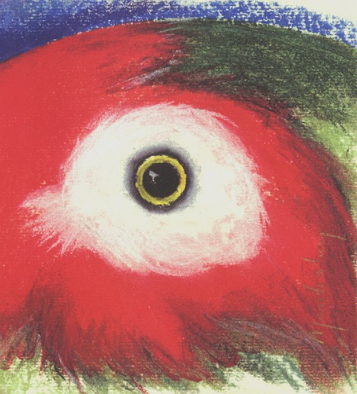

"Olhar das Coxilhas"
Marília Cruz
Lápis Pastel Seco em
Papel Canson
Acervo CEPEN
Homenagem de Marília
Cruz aos trabalhos de preservação do Papagaio-charão,
Amazona pretrei.
Com referência ao olhar
no tempo...
Espécie com passado
tranqüilo e farto, presente escasso, preocupante e duvidoso, e um
futuro delicado.
Parece olhar para a humanidade
e observar paralelo na sua qualidade de vida.